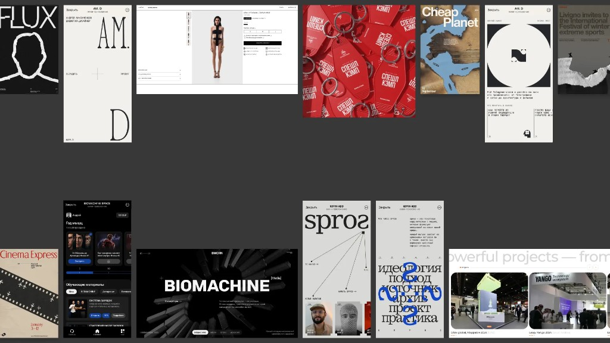
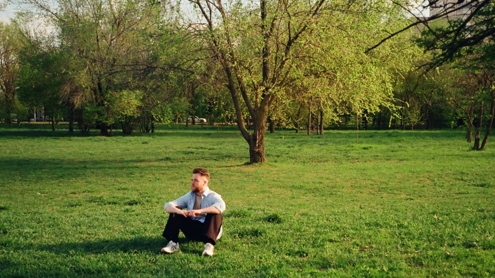
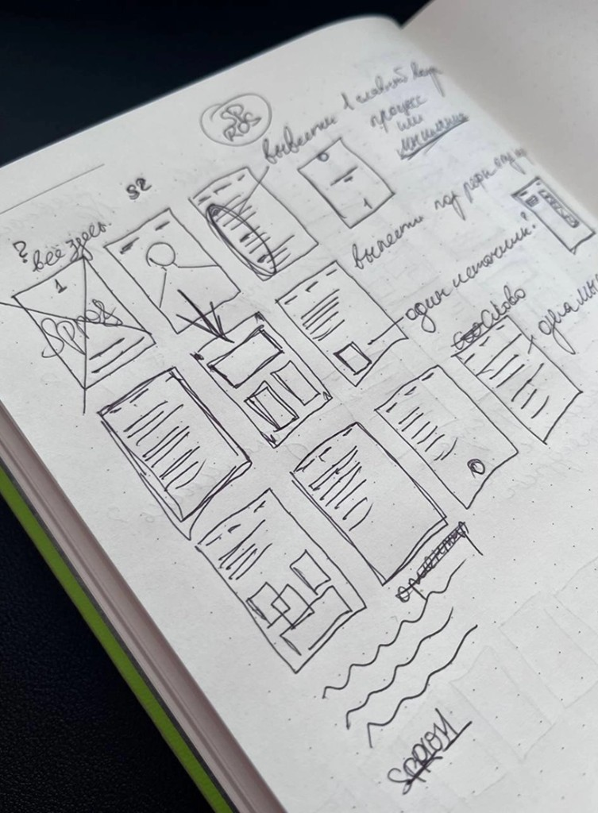
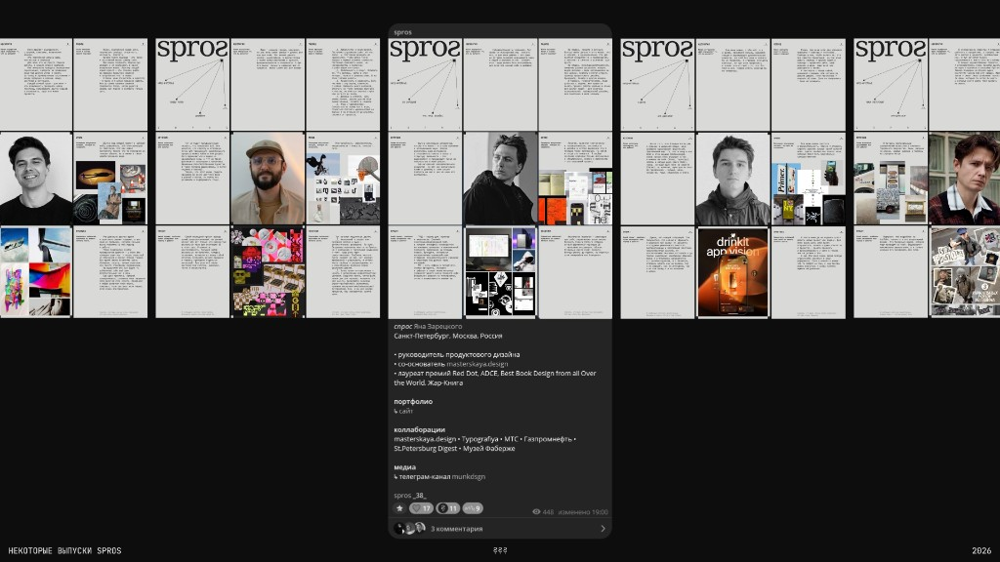
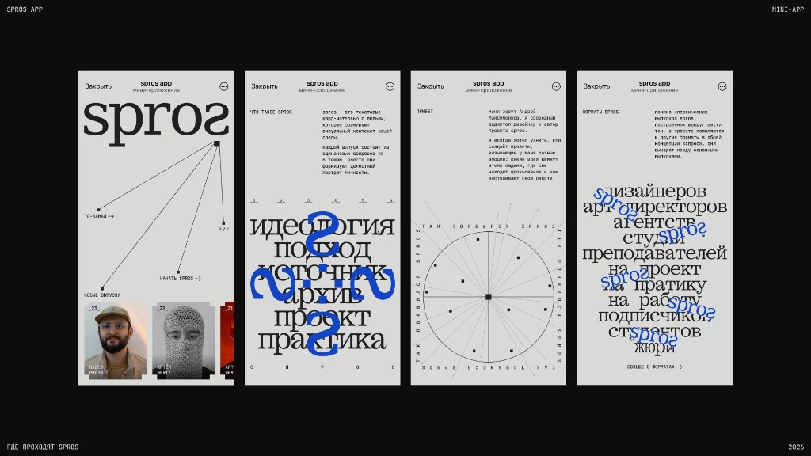

Андрей из Ростова, автор spros про мышление дизайнеров. Пять принципов формулирует прямо в тексте и записывает ночные идеи, пока не забылись.
Как ты для себя определяешь «культуру дизайна»?
Очень интересный и глубокий вопрос. Скажу так, что для меня «культура дизайна» – это некая система представлений о том, зачем вообще существует дизайн, какую роль он играет в мире и в нашей повседневной жизни, каким образом принимаются решения внутри этой профессии и какие вопросы мы задаём себе перед тем, как что-то сделать. И также я считаю, что культура дизайна отвечает на вопросы, которые всегда лежат глубже конкретного проекта: что мы считаем «классным» дизайном, ради кого и чего мы работаем, получаем награды и какие компромиссы готовы принимать, а какие нет.
Мне кажется важным, что культура дизайна проявляется не тогда, когда дизайнер показывает свою индивидуальность, а тогда, когда он способен увидеть и понять что-то за пределами самого себя – пользователя, читателя, бренд, культурный контекст, технологию. Выйти из этой «творческой матрицы». Ведь в нашей профессии существует большое количество рамок и ограничений, дизайн не создаётся из пустоты, и поэтому качество работы во многом определяется тем, насколько внимательно дизайнер умеет эту систему чувствовать и считывать.
Наверное, поэтому меня особенно интересуют не столько результаты дизайнерской работы, сколько идеология, мышление и принципы, которые стоят за ними и которые являются важной частью моего проекта spros. И все мы прекрасно понимаем, что любой визуальный язык со временем устаревает, инструменты меняются ещё быстрее, а вот способы мышления и подходы к работе оказываются гораздо более устойчивыми.
Из этого понимания культуры дизайна выросли и мои собственные рабочие принципы. Постараюсь кратко описать каждый из них:
Первый – контекст. Я думаю, что это самая важная штука для дизайнеров – понимание контекста. Для меня любая работа начинается с погружения в среду, в которой будут существовать будущие решения. Очень важно понимать не только задачу, но и людей, процессы, ограничения, культурный и бизнес-контекст проекта.
Второй – структура. Я люблю порядок во всём и считаю, что хорошая организация процесса напрямую влияет на качество результата. Структура помогает удерживать сложность, большое количество вводной информации, а также делать работу прозрачной и принимать решения осознанно, а не интуитивно.
Третий – метафора. Самое увлекательное для меня при создании проекта – это поиски правильной метафоры, на которой можно построить полноценный визуальный язык.
Четвёртый – вариативность. На этапе поиска я стараюсь исследовать несколько направлений одновременно. Это позволяет не привязываться к первой найденной идее и лучше понять, какое решение действительно выдерживает проверку контекстом, логикой и временем.
И ещё один важный принцип – человекоцентричность. Причём не только по отношению к конечному пользователю, но и по отношению ко всем участникам рабочего процесса. Мне важно создавать рабочую, нетоксичную среду, в которой людям понятно, что происходит, почему принимаются те или иные решения и как они могут участвовать в этом диалоге.

Какие практики, ритуалы и принципы в работе остаются неизменными?
Про принципы я ответил в предыдущем блоке, а здесь более подробно поделюсь своими практиками и ритуалами. Кстати, в рамках проекта spros, который я делаю, есть похожий вопрос в последней карточке – «Практика». И мне очень понравился ёмкий ответ Миши Питерского в одном из выпусков – «Начинать всегда проще с «БЛЯ, КОРОЧЕ». Это работает как сброс напряжения. Можно сказать вслух, можно написать, если идёт работа на концептуальном уровне, помогает всегда.».
Ну, а если говорить серьёзно, то у меня очень классический набор дизайнерских практик, которые вытекают из моих рабочих принципов. Вот основные:
1. Я предпочитаю не бросаться сразу делать проект. Мне важно сначала погрузиться в контекст, собрать материалы, посёрчить референсы, посмотреть на среду, в которой будет существовать проект. И в такие моменты кажется, что ты просто функционально прокрастинируешь, но именно на этом этапе формируется большая часть будущих решений. Мозг, как большой сосуд – наполняется различными решениями, которые потом неожиданно складываются в нужный образ, метафору или аргумент.
2. Я стараюсь буквально пожить с задачей какое-то время. Не обязательно долго, иногда достаточно одного вечера или нескольких дней (главное – не затягивать). Мне важно успеть сформировать внутреннее представление о том, чем проект может стать, прежде чем переходить к конкретным решениям.
3. Постоянно анализировать визуальную среду, в которой ты находишься. Когда я вижу интересный принт, книгу или плакат, я автоматически пытаюсь разложить его на составляющие: понять, почему это работает, какие решения были приняты, что создаёт нужное впечатление и что можно было бы сделать иначе. И со временем такие наблюдения становятся привычкой и помогают находить неожиданные инсайты даже вне работы.
4. Если задача кажется слишком большой или сложной, я стараюсь разбить её на более мелкие части. Обычно начать гораздо проще, когда перед тобой не абстрактный «большой проект», а конкретный следующий шаг, который можно сделать прямо сейчас. Вообще, этот подход отлично работает во всех сферах жизни.
5. Периодически отдаляться от процесса создания чего-либо. Когда долго смотришь на одну и ту же работу, взгляд замыливается. Поэтому я стараюсь переключаться, например, пойти позаниматься физически, прогуляться на свежем воздухе или в конце концов помыть 5 кружек из-под кофе на рабочем столе, и уже после вернуться к проекту.
6. И ещё одна практика напоследок – я всегда записываю «ночные идеи», которые зачастую кажутся бредовыми. Во-первых, потому что к утру их очень легко забыть, а во-вторых, потому что даже самая странная мысль может оказаться полезной. Не обязательно как готовое решение, но как отправная точка для поиска, новое направление или трамплин для более сильной и неожиданной идеи.

Как переводишь ценности в дизайн-решения – на что опираешься в первую очередь?
Для меня ценности переходят в дизайн-решения не через прямую формулу, а через ограничения. Звучит, конечно, не очень романтично, особенно в контексте современной России, но именно в ограничениях становится понятно, во что ты действительно веришь.
В рабочих процессах дизайнеры каждый день сталкиваются с моментом выбора: сделать быстрее или точнее, оставить красивую идею или отказаться от неё, потому что она не закрывает задачу и т. д. Поэтому ценности лично для меня являются хорошим инструментом отбора различных решений.
Скажем так, я опираюсь на внутреннюю честность по отношению к любой задаче. Например, не усложнять там, где можно сделать проще, и не оставлять решение только потому, что оно мне визуально нравится. Как говорится, иногда самое ценное дизайнерское действие – не добавить что-то, а вовремя убрать.
Ещё я опираюсь на точность. Не в смысле стерильности или идеально вылизанного макета, а в смысле соответствия формы тому, что проект пытается сказать. Если решение выглядит «классно», но не усиливает мысль, не раскрывает контекст и не помогает человеку лучше понять проект, значит, оно случайное.
Поэтому для меня перевод ценностей в дизайн – это постоянная проверка решений на честность, необходимость и точность. Что здесь действительно нужно? Что работает на смысл? Что появилось из задачи, а что я просто принёс с собой? – опять-таки, отсылаясь к ответу на первый вопрос, очень важно постоянно задавать себе конкретные вопросы перед тем, как что-то сделать.
Расскажи про spros: как возник проект, зачем ты им занимаешься и что для тебя в нём самое ценное?
В вопросе №2 в блоке с перечислением практик я написал про то, что важно записывать «ночные идеи», которые приходят как будто из неоткуда. Собственно, так и появился мой проект spros, как спонтанная заметка в 3 утра, которую я разгонял до самого рассвета. Конечно, это была квинтэссенция моих мыслей за некоторый промежуток времени о создании подобного проекта. И в ночь с 11.11 на 12.11 я соединил все пазлы вместе и почти что сразу выдал нынешнюю концепцию spros у себя в заметках. Далее в течение месяца я занимался дошлифовкой смысловой концепции и разработкой визуальной составляющей.

Концепция проекта заключается в следующем. Spros – это текстовые кард-интервью с теми, кто формирует визуальный контекст нашей среды: дизайнеры, художники, визионеры и различные креаторы. Это Телеграм-проект, который строится вокруг концепции «спрос» и включает несколько форматов (например, спрос студии, спрос арт-директоров, спрос на практику и множество других форматов, которые описаны в канале). При этом основой проекта остаются классические выпуски с дизайнерами из 9 карточек и ссылками на основные ресурсы гостя: в каждом из таких выпусков – одинаковые вопросы по шести темам:
_1_ Идеология
Какая внутренняя идея определяет то, что вы делаете?
_2_ Подход
Какие принципы лежат в основе вашего подхода?
_3_ Источник
Какие источники вдохновляют вас вне работы?
_4_ Архив
Последние визуальные находки, которые вы сохранили.
_5_ Проект
Какой проект, наиболее полно раскрывает ваш подход в работе?
_6_ Практика
Поделитесь небольшой практикой из вашего личного опыта.
При более детальной разработке концепции и выборе тем у меня, конечно же, были различные варианты как самих тем, так и вопросов. При выборе я хотел собрать не просто пул интересных вопросов, а выстроить определённую логику и структуру разговора. Выпуск начинается с идеологии и подхода, потому что именно они помогают понять, как человек смотрит на профессию и какие принципы лежат в основе его решений. Затем идут источники и архив – это темы, которые позволяют увидеть, из чего формируется его визуальное и культурное поле, что влияет на его мышление и внимание. После этого появляется проект, уже как результат всех предыдущих слоёв, как возможность увидеть, как идеи и принципы проявляются в реальной работе. И завершается выпуск практикой – самым прикладным и человеческим уровнем разговора.
Наверное, если посмотреть на эту структуру целиком, то она движется от внутреннего к внешнему: от убеждений и мышления к влияниям, затем к результатам работы и, наконец, к повседневной практике. Мне хотелось создать формат, который помогает увидеть не только то, что делает дизайнер, но и то, как он к этому приходит.

Теперь расскажу немного о том, почему вообще появился spros
Я занимаюсь дизайном около 5 лет и за это время подписался на разных площадках на множество талантливых специалистов. Всё это время, наблюдая за ними, я видел в основном их проекты, кейсы, награды и профессиональные достижения. Но при этом почти ничего не знал о том, как эти люди мыслят, какие принципы лежат в основе их работы, что их вдохновляет и какие практики помогают им развиваться.
Большинство дизайнеров – довольно непубличные люди. Они просто хорошо делают свою работу и редко рассказывают о себе за пределами проектов. Конечно, есть специалисты, которые активно выступают на конференциях, ходят на подкасты, преподают и ведут социальные сети. Но при этом огромное количество сильных дизайнеров и арт-директоров остаются в тени, показывая миру только результаты своей работы.
Именно это наблюдение во многом подтолкнуло меня к созданию spros. Мне хотелось заглянуть чуть глубже проектов и понять, какие люди стоят за ними, как они принимают решения, на что опираются в работе и как формировался их профессиональный взгляд.
Кстати, моим словам есть вполне конкретное подтверждение. После участия в spros некоторые дизайнеры и арт-директора с 10–15 годами опыта писали мне, что это было их первое интервью за всё время в профессии. И таких случаев оказалось намного больше, чем я ожидал.
Поэтому могу сказать, что spros родился из простого и искреннего интереса узнать профессионалов своего дела немного ближе и поделиться этим знанием с дизайн-сообществом.
Почему выбрал именно текстовый формат интервью
Лично для меня интервью в текстовом формате остаётся более интимной историей, когда у гостя есть достаточно времени на размышления над ответом. Сегодня большая часть контента существует в формате видео, подкастов, но текст по-прежнему остаётся одним из лучших инструментов для фиксации и передачи мысли. Он требует большей концентрации как от автора, так и от читателя, оставляет пространство для интерпретации и позволяет возвращаться к отдельным идеям спустя время.
Кроме того, текст создаёт более ровные условия для разговора. В нём на второй план уходят харизма, голос, качество записи и другие факторы, которые могут отвлекать от содержания. В центре остаются сами мысли, опыт и формулировки собеседника. А для проекта, который исследует культуру дизайна через идеи, принципы и ценности, это кажется особенно важным.

Каждый гость проходит «спрос» в специальном мини-приложении spros app внутри Telegram, где собраны вопросы по всем шести темам проекта в формате анкеты – гость отвечает в своём темпе, а я на основе полученных ответов формирую выпуск. Так всё взаимодействие происходит внутри единой коммуникационной среды, а доступ к анкете есть только у приглашённых гостей.
Завершая этот спич, хотелось бы в конце ответить на последнюю часть вопроса – «что для тебя самое ценное в проекте?».
Я вижу для себя ценность в spros в том, что у меня есть возможность фиксировать и сохранять профессиональный опыт, который обычно остаётся невидимым. За время работы над проектом я понял, что дизайн гораздо интереснее рассматривать не через отдельные артефакты, а через людей и их способы мышления.
От выпуска к выпуску можно заметить, какие источники вдохновения повторяются, какие методы работы оказываются близкими многим, какие идеи формируют наше поколение: появляется ощущение общей культуры, ценностей и принципов, которые объединяют это комьюнити.
Думаю, что именно в этом для меня и заключается главная ценность spros – не просто рассказывать истории отдельных дизайнеров, а через них лучше понимать состояние и развитие дизайн-культуры в целом. Ведь чем больше мы говорим о том, как мы мыслим, принимаем решения и работаем, тем более осознанным и зрелым становится профессиональное сообщество.
Крафт и технологии (AI) – видишь ли ты конфликт между этими понятиями или они усиливают друг друга?
Честно сказать, я не вижу особого конфликта между этими понятиями, так как они существуют вообще на разных уровнях работы. Нейронки помогают выполнять задачи быстрее и эффективнее, а крафт определяет качество решений, которые стоят за этой работой. ИИ может помочь с поиском идей, исследованием, подбором рефов, но он не может заменить вкус, насмотренность, понимание контекста и способность принимать осознанные решения. Но это может быть «пока», следим за развитием событий.
Более того, мне кажется, что с развитием нейронок ценность настоящего крафта только растёт. Когда технический порог входа становится ниже, всё большее значение приобретают те качества, о которых я писал чуть выше. То есть именно те качества, которые невозможно свести к нажатию одной кнопки.
Поэтому для меня ИИ – это не альтернатива крафту, а ещё один инструмент. Мне кажется, эта мысль супер простой. Вопрос не в том, используешь ты этот инструмент или нет, а в том, какие решения ты принимаешь с его помощью и какие смыслы за ними стоят.
Линки
О практике
Андрей Максименков – свободный диджитал-дизайнер, создатель проекта spros.